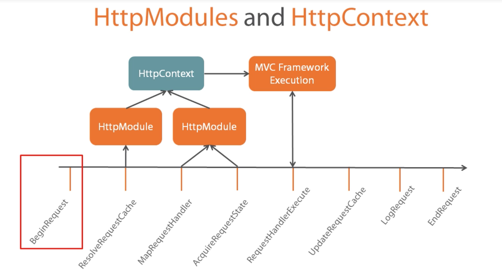
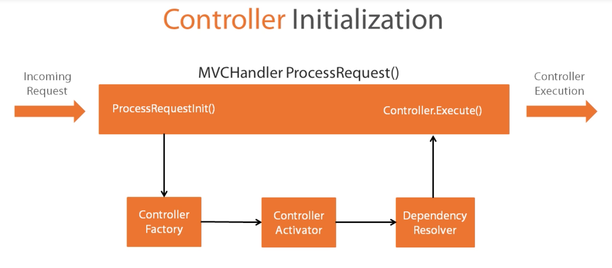
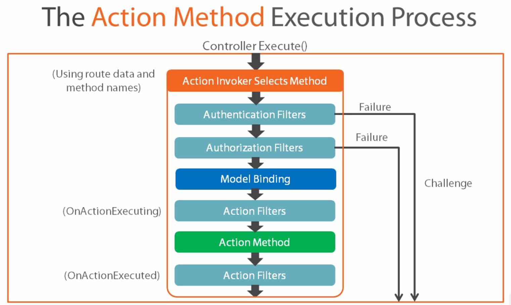
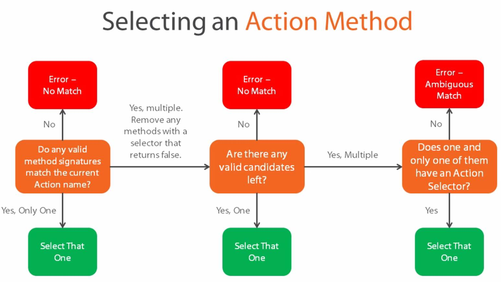

Classes that implements IHTTPHandler and generate a response to an HTTPRequest.
HTTPHandlers and the Request Life Cycle
MapRequestHandler
PostMapRequestHandler
RequestHandlerExecute
PostRequestHandlerExecute
HTTPModules
Classes that implements IHTTPModule and are designed to respond to Life Cycle Events.
HTTPModules and HTTPContext
HTTPModules can help us in pouplating HTTPContext properties, for example Authentation module will help in populating the user property details on HTTPContext.
HTTPModules - HTTPContext Playing together
The MvcRoutehandler and MvcHandler
UrlRoutingModule (excutes at PostResolveRequestCache)
Match Url to Route defined in MVC app
Get the Routes MvcRoutehandler
Call GetHttpHander on MvcRoutehandler
Call ProcessRequest on returned MvcHandler
Understanding Controllers Intialization
MvcHandler retrieves a controller from the ControllerFactory
MvcHandler calls the Execute() method of the acquired Controller.
The DefaultControllerFactory can use a Dependency Resovler to acquire controller instances.
The Depenedency Resolver is extensible.
Controllers and the Request Life Cycle
Controllers are the most important classes of MVC, Controllers are resposible for orchestrate the relationship of models & views. At the low level controllers are nothing but a class which implements IController with one generic method Execute().
Controller:IController
Controller Intialization
Controller Intialization
ProcessRequestInit() - via Controller Factory it will resolve the required controller class.
Controller Activator will help us in initiating the selected controller.
Depenedency Resolver will do the required wrt dependency injection.
Controller.Execute()
The Controller Factory
IControllerFactory Interface
CreateController
GetControllerSessionStateBehavior
ReleaseController
Depenedency Resolver
Implements IDependencyResolver
GetService
GetServices
Action Method Execution
Action Method Execution Process
Controller Execute() - will hands off to Action Invoker
Action Invoker Selects Method (Using route data and method names)
Authentation Filters (Failure will challenge via a login module)
Authorization Filters (Failure will challenge via a login module)
Model Binding
Action Filters (OnActionExecuting)
Action Method
Action Filters (OnActionExecuted)
The Action Invoker
Action Invoker is used by the controller to identify & excute the appropriate method.
IActionInvoker
InvokeAction
MVC Frameowrk provides the powerful ControllerActionInvoker
Can customize default behavior using extension points.
Action Method Selectors
Action Method Selectors
Do any valid method signatures match the current Action name?
No - Error - No Match
Yes, only one - Select that one
Yes, Multiple. Remove any methods with a selector that returns false. - Are there any valid candidates left?
-No - Error - No Match
Yes, One - Select That One
Yes, Multiple - Does one and only one of them have an action Selector
Yes - Select That One
No - Error - Ambigous Match
ActionMethodSelection
Common Action Selectors:
HttpGet
HttpPost
AcceptVerbs
ActionName
NonAction
Custom
The Model Binding Process
Model Binder populates Action Method Parameters from the Action Invoker by taking the help of Value Providers. Implements IModelBinder - BindModel
Capture required details from "Value Providers":
From Data
Route Data
Query String
Files
Custom - Cookies, Browser, etc.
Working with MVC Filters
Designed to inject misc. logic into the life Cycle